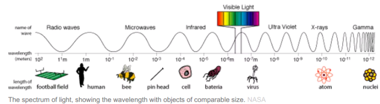
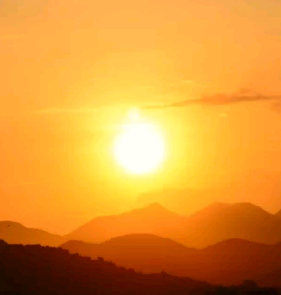

DEVELOPED BY ROBERT ZULU THE PROFESSIONAL PROGRAMMER
Why is the sky blue?
A clear cloudless day-time sky is blue because molecules in the air scatter blue light from the sun more than they scatter red light. When we look towards the sun at sunset, we see red and orange colours because the blue light has been scattered out and away from the line of sight.
The three different types of colour receptors in the retina of the human eye respond most strongly to red, green and blue wavelengths, giving us our colour vision.
Some people think the sky is blue because of sunlight reflected off the ocean and back into the sky. But the sky is blue even in the middle of the countryside, nowhere near the sea! Others think it’s because of the water in our atmosphere. But the sky is blue in places that are extremely dry, like the desert.
So what’s the real reason?
The sky is blue because of the way sunlight interacts with our atmosphere.
If you’ve ever played with a prism or seen a rainbow, then you know light is made up of different colours. The name “ROY G. BIV” helps us remember these colours: red, orange, yellow, green, blue, indigo, and violet.
These colours make up just a tiny portion of the electromagnetic spectrum, which includes ultraviolet waves, microwaves, and radio waves. This means the invisible waves that cause sunburns, allow us to heat-up our leftovers, and let us listen to the radio are all forms of light.

Light moves as waves of different lengths: some are short,
making bluer light, and some are long, making redder light.
As sunlight reaches our atmosphere, molecules in the air scatter
the bluer light but let the red light pass through. Scientists call this Rayleigh scattering.
The white light from the sun is a mixture of all colours of the rainbow. This was demonstrated by Isaac Newton, who used a prism to separate the different colours and so form a spectrum. The colours of light are distinguished by their different wavelengths. The visible part of the spectrum ranges from red light with a wavelength of about 720 nm, to violet with a wavelength of about 380 nm, with orange, yellow, green, blue and indigo between.
Sunsets
When the Sun is high in the sky, it appears its true colour: white.
At sunrise and sunset, we see a much redder sun.
This is because the sunlight is passing through a
thicker layer of our atmosphere. This scatters the blue and green light along the way, allowing the redder light to pass through and illuminate the clouds in a beautiful array of red, orange, and pink.

When the air is clear the sunset will appear yellow, because the light from the sun has passed a long distance through air and some of the blue light has been scattered away. If the air is polluted with small particles, natural or otherwise, the sunset will be more red. Sunsets over the sea may also be orange, due to salt particles in the air, which are effective Tyndall scatterers. The sky around the sun is seen reddened, as well as the light coming directly from the sun. This is because all light is scattered relatively well through small angles—but blue light is then more likely to be scattered twice or more over the greater distances, leaving the yellow, red and orange colours.
Rayleigh scattering can affect how we see the Moon. When the Moon passes through the shadow of the Earth during a total lunar eclipse, blue and green light is scattered in the Earth’s atmosphere, letting red light pass through. Our atmosphere acts a like a magnifying glass, refracting (bending) the red sunlight onto the Moon. This can give it an eerie dark red hue. For this reason, many cultures - including some Australian Aboriginal groups - associate lunar eclipses with blood.
BLUE SKY